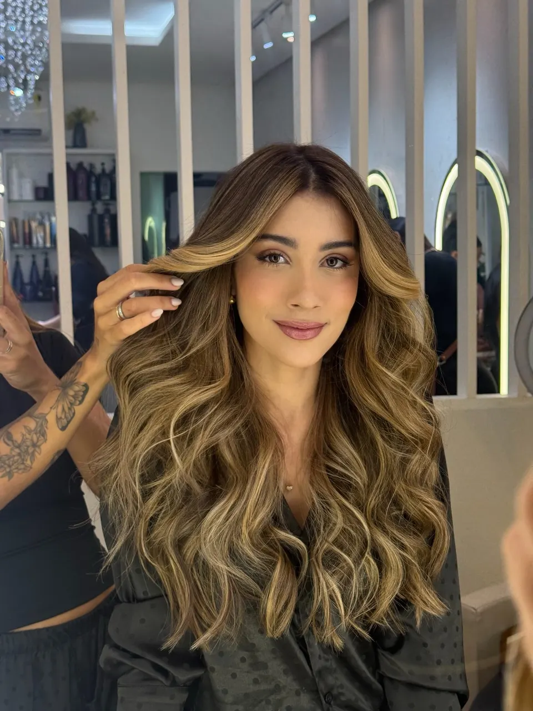

Alinhamento biocompatível
Ritual Escova Orgânica
Alisamento com movimento e caimento natural, à base de ácidos orgânicos. Sem fumaça e sem cheiro forte.
A partir de
R$ 240
3h a 4h
Agendar este ritual